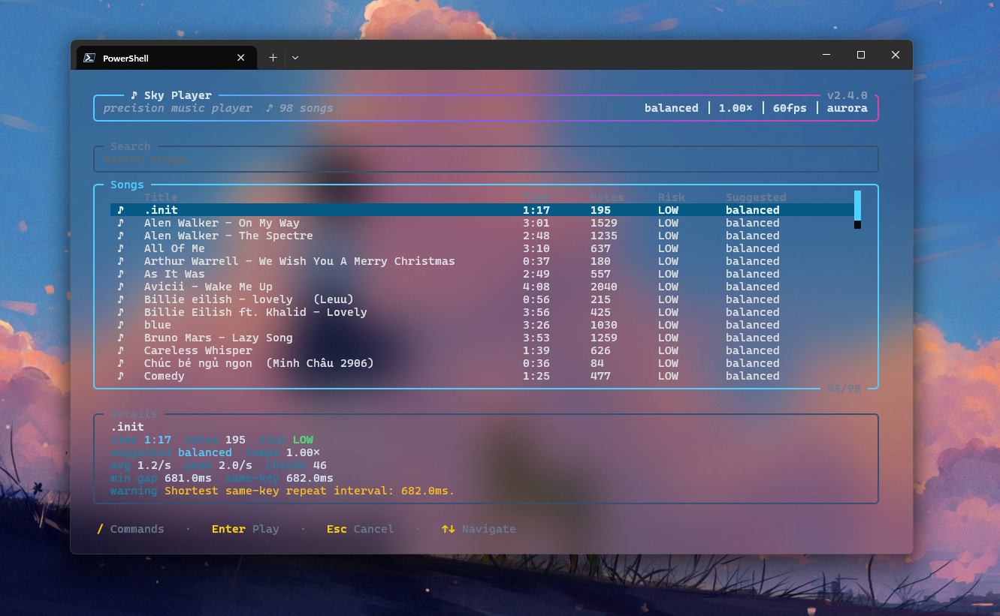

Music automation for Sky · Windows 10/11
Play the sheet.Not the keyboard.
Load a Sky music sheet, switch to the game, and let every note, chord, and hold land on time.
Automated playback may conflict with Sky’s Terms of Service. Use responsibly and at your own risk.
- 00:12.400 A1 + B2 + C3 CHORD
- 00:12.733 D4 NOTE
- 00:13.066 E5 HOLD
- 00:13.600 A2 + C4 CHORD
Built around the music
Timing is the instrument.
A sheet is more than a list of keys. Chords must arrive together, fast passages need consistent spacing, and holds need their full duration. Sky Auto Player schedules those musical events as a performance rather than replaying a generic macro.
- Frame-aligned chords
- Tempo-aware playback
- Notes, chords and holds
- Dry-run preview
- 00:12.400 A1 + B2 + C3 CHORD · arrive together
- 00:12.733 D4 NOTE · keep spacing
- 00:13.066 E5 ━━━━━━━ HOLD · preserve duration
Not a generic macro
Built for music, not click sequences.
| Generic macro | Sky Auto Player |
|---|---|
| Sequential key presses | Chords aligned to one dispatch frame |
| Fixed delays | Timing follows the sheet and tempo |
| Tap-focused playback | Notes, chords and holds |
| One global setup | Per-song timing profiles |

The actual player
Your library, timing profile and controls in one place.
The keyboard-first picker keeps song search, playback setup and status visible without adding a heavyweight desktop interface.
- Search and select songs from the terminal picker.
- Review the suggested timing profile before playback.
- Keep pause, skip and stop controls within reach.
Three steps
From download to playback in minutes.
Download
Get the latest ZIP from GitHub Releases and extract it to a folder you control. No system installer or administrator access is required.
Add a sheet
Export a JSON,
.skysheetor compatible TXT sheet from the Sky Music editor and place it in thesongsfolder.Play
Open Sky Auto Player, choose a song, then switch to the Sky window when you are ready.
Ctrl+R reloads the library · F8 pauses · F9 skips · F10 stops
Technical boundaries
Clear about what it does—and what it does not do.
Sky Auto Player runs as a separate Windows application and sends standard input events. Its source is public, so the implementation can be reviewed directly.
- Input
- Windows
SendInput - Process
- Separate application
- Game memory
- Not inspected
- Code injection
- Not used
- Game files
- Not modified
- License
- GNU GPL v3.0
- Updates
- Explicit updater with checksum verification
Terms of Service: These technical boundaries do not guarantee account safety. Automated music playback may still conflict with Sky’s Terms of Service. Use the tool responsibly and at your own risk.
Supported sheets
Load the formats the community already uses.
Structured song sheets with musical events and metadata accepted by the player.
JSON-based sheets with the .skysheet extension used by the Sky music editor ecosystem.
Plain-text files containing a JSON-compatible sheet structure.
Before you download
A few useful answers first.
Is Sky Auto Player free?
Yes. It is open source under GNU GPL v3.0 and the packaged release is available from GitHub Releases.
Which systems are supported?
The packaged application supports 64-bit Windows 10 and Windows 11. Verify the current release notes before downloading.
Can using it violate the game’s rules?
Automated playback may conflict with Sky’s Terms of Service. The application’s technical architecture does not remove that policy risk.
Your next performance is already written.
Download Sky Auto Player, add a sheet and let the timing take care of itself.